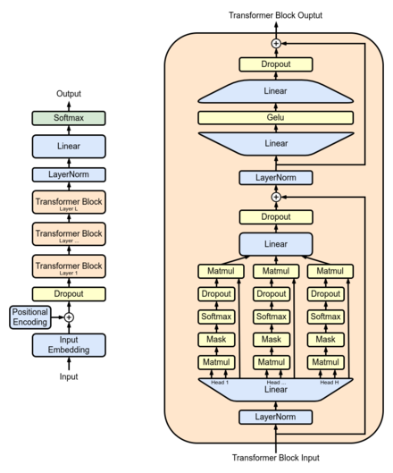

<!DOCTYPE HTML>
<html>
<head>
    <title>What is GPT</title>
    <meta charset="utf-8">
</head>
</html>
<body>
    <h1><a href="What is GPT.html">What is GPT</a></h1>
    <ol>
        <li><a href="1.html">History</a></li>
        <li><a href="2.html">Foundational models</a></li>
        <li><a href="3.html">Task-specific models</a></li>
    </ol>
    
    <p><strong>Generative pre-trained transformers (GPT)</strong> are a type of <a title="A large language model (LLM) is a type of language model notable for its ability to achieve general-purpose language understanding and generation.">large language model (LLM)</a><a title="Haddad, Mohammed. 'How does GPT-4 work and how can you start using it in ChatGPT?.' -www.aljazeera.com.">[1]</a><a title="'Generative AI: a game-changer society needs to be ready for.' -World Economic Forum. 9 January 2023.">[2]</a><a title="'The A to Z of Artificial Intelligence.' -Time. April 13, 2023.">[3]</a> and a prominent framework for <a title="Generative artificial intelligence is artificial intelligence capable of generating text, images, or other media, using generative models. Generative AI models learn the patterns and structure of their input training data and then generate new data that has similar characteristics.">generative artificial intelligence.</a><a title="Hu, Luhui (November 15, 2022). 'Generative AI and Future.' Medium.">[4]</a><a title="'CSDL | IEEE Computer Society.' -www.computer.org.">[5]</a> They are artificial neural networks that are based on the <a title="A transformer is a deep learning architecture, initially proposed in 2017, that relies on the parallel multi-head attention mechanism.">transformer</a> architecture, pre-trained on large <a title="A data set is a collection of data.">data sets</a> of unlabelled text, and able to generate novel human-like content.<a title="'Generative AI: a game-changer society needs to be ready for.' -World Economic Forum. 9 January 2023.">[2]</a><a title="'The A to Z of Artificial Intelligence.' -Time. April 13, 2023.">[3]</a> As of 2023, most LLMs have these characteristics<a title="Toews, Rob. 'The Next Generation Of Large Language Models.' -Forbes.">[6]</a> and are sometimes referred to broadly as GPTs.<a title="Mckendrick, Joe (March 13, 2023). 'Most Jobs Soon To Be 'Influenced' By Artificial Intelligence, Research Out Of OpenAI And University Of Pennsylvania Suggests.' -Forbes.">[7]</a></p>
    
    <p>The first GPT was introduced in 2018 by <a title="OpenAI is an American artificial intelligence (AI) research organization consisting of the non-profit OpenAI, Inc.">OpenAI.</a><a title="'Improving language understanding with unsupervised learning.' -openai.com. June 11, 2018. Archived from the original on 2023-03-18. Retrieved 2023-03-18.">[8]</a> OpenAI has released very influential GPT foundation models that have been sequentially numbered, to comprise its "GPT-n" series.<a title="'GPT-1 to GPT-4: Each of OpenAI's GPT Models Explained and Compared.' -MUO. April 11, 2023.">[9]</a> Each of these was significantly more capable than the previous, due to increased size (number of trainable parameters) and training. The most recent of these, <a title="Generative Pre-trained Transformer 4 (GPT-4) is a multimodal large language model created by OpenAI, and the fourth in its series of GPT foundation models.">GPT-4,</a> was released in March 2023.<a title="The date of the event predicted near this tag has passed. (November 2023)">[needs update]</a> Such models have been the basis for their more <a href="3.html">task-specific GPT systems,</a> including models <a title="A large language model (LLM) is a type of language model notable for its ability to achieve general-purpose language understanding and generation.">fine-tuned for instruction following</a>—which in turn power the <a title="ChatGPT is a large language model-based chatbot developed by OpenAI and launched on November 30, 2022, that enables users to refine and steer a conversation towards a desired length, format, style, level of detail, and language.">ChatGPT</a> <a title="A chatbot is a software application or web interface that aims to mimic human conversation through text or voice interactions.">chatbot</a> service.<a title="Haddad, Mohammed. 'How does GPT-4 work and how can you start using it in ChatGPT?.' -www.aljazeera.com.">[1]</a></p>
    <p>The term "GPT" is also used in the names and descriptions of such models developed by others. For example, other GPT foundation models include <a title="EleutherAI is a grass-roots non-profit artificial intelligence (AI) research group.">a series of models</a> created by <a title="EleutherAI is a grass-roots non-profit artificial intelligence (AI) research group.">EleutherAI,</a><a title="Alford, Anthony (July 13, 2021). 'EleutherAI Open-Sources Six Billion Parameter GPT-3 Clone GPT-J.' -InfoQ.">[10]</a> and recently seven models created by <a title="Cerebras Systems is an American artificial intelligence company with offices in Sunnyvale and San Diego, Toronto, Tokyo and Bangalore, India.">Cerebras.</a><a title="'News' (Press release)." href="https://www.businesswire.com/news/home/20230328005366/en/Cerebras-Systems-Releases-Seven-New-GPT-Models-Trained-on-CS-2-Wafer-Scale-Systems" target="_blank">[11]</a> Also, companies in different industries have developed task-specific GPTs in their respective fields, such as <a title="Salesforce, Inc. is an American cloud-based software company headquartered in San Francisco, California. It provides customer relationship management (CRM) software and applications focused on sales, customer service, marketing automation, e-commerce, analytics, and application development.">Salesforce</a>'s "EinsteinGPT" (for <a title="Customer relationship management (CRM) is a process in which a business or other organization administers its interactions with customers, typically using data analysis to study large amounts of information.">CRM</a>)<a title="Morrison, Ryan (7 March 2023). 'Salesforce launches EinsteinGPT built with OpenAI technology.' -Tech Monitor.">[12]</a> and <a title="Bloomberg L.P. is a privately held financial, software, data, and media company headquartered in Midtown Manhattan, New York City.">Bloomberg</a>'s "BloombergGPT" (for finance).<a title="'The ChatGPT of Finance is Here, Bloomberg is Combining AI and Fintech.' -Forbes." href="https://www.forbes.com/sites/jamielsheikh/2023/04/05/the-chatgpt-of-finance-is-here-bloomberg-is-combining-ai-and-fintech/?sh=2987df833081" target="_blank">[13]</a></p>
</body>